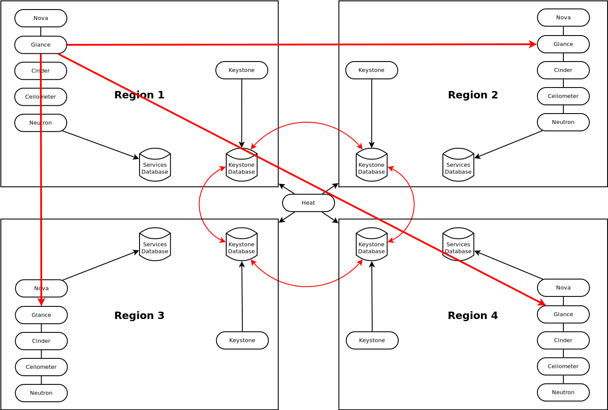
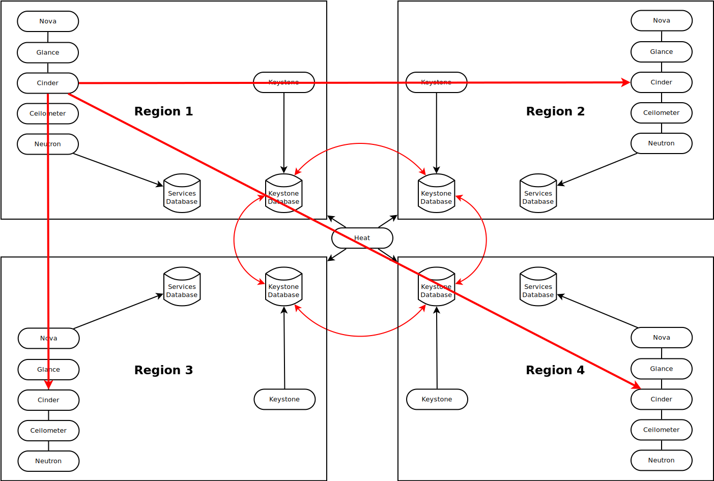

Hebrew introduction transcript
Hello everyone.
I would like to start with a few personal words of my own, and I thank you in advance for tolerating my accent.
This is my second OpenStack Israel. And the first one in May had a profound impact on my professional and personal life.
Over the last few months, I have had the pleasure of interacting with enormously intelligent, professional, and unreservedly honest people from this community.
And up to this point, throughout my travels, I have never felt so immediately welcome in any other country I have visited.
So for all of that, thank you very much.
Greetings from Havana
A fresh perspective on globally distributed OpenStack
What are we talking about?
Geographically distributed OpenStack
An OpenStack cloud (or multiple clouds) spanning multiple geographical sites with limited bandwith and significant latency between them.
Why would we want that?
Disaster Recovery
Being able to recover services in a backup site if the primary site is disabled or unavailable.
Local Affinity
Being able to host content or services in geographical or legal proximity to your users.
Follow The Sun
Being able to geographically position your services based on time of day or other time-based parameters.
What do we need in a distributed cloud?
Unified user management
The ability for any user to use their authentication credentials, unmodified, across the entire cloud.
Unified user data
The ability to keep persistent user data available to services, no matter where they run.
Unified virtual network
The ability to provide a unified logical view of the network connections between sites, which is decoupled from a heterogeneous physical network.
Unified orchestration
The ability to automate, deploy and orchestrate services across the cloud.
Unified user interface
The ability to manage, observe and modify cloud workloads from a single UI.
Unified API access
The ability to interact programmatically with the entire cloud in a streamlined fashion.
Which options does OpenStack provide for segregating clouds?
4
+1
Availability Zones
All services are shared, compute hosts are segregated
Host aggregates
All services are shared, compute hosts are grouped
Cells
Nova is segregated by sites, everything else is shared
Multiple regions
Completely separate OpenStack installations unified by a single Keystone
So what's the real challenge in all this?
It all boils down to
Replication
In OpenStack, most services split data and metadata.
Metadata usually goes
into a relational database,
whereas
data goes into a service-specific
store.
That means we must separately replicate data and metadata, while keeping them consistent.
Unfortunately, that's
damn near impossible
Why?

Benjamin Erb, Concurrent Programming for Scalable Web Architectures, CC-BY-SA
Our only reliable multi-site, multi-master metadata store, MySQL+Galera, is a CP system.
Several service-specific stores are also CP.
Example: Cinder with Ceph or GlusterFS
We would have to synchronize their replication stream with the MySQL database's.
Other stores are AP (eventually consistent)
Example: Swift, and any service using it
It is fundamentally impossible to synchronize these data stores with metadata in a CP store, across multiple sites.
C+A+P? Won't happen.
Luckily, are two
exceptions
Keystone
does not separate data from metadata
Everything lives in the database
Heat
can run in standalone mode
managing multiple clouds.
So:
MySQL/Galera-backed Keystone
+ per-site Keystone regions
+ multi-cloud standalone Heat
= geo-distributed OpenStack cloud
But can we
replicate
anything
else?
Well,
kind of.
glance-replicator

What about Cinder?
Wait, what?
Continuous volume replication?
Like Volume Mirroring?
Not so fast.
Neutron?
Nova?
OpenStack Distributed Cloud (Havana Style)
Unify?
Orchestrate!
Liked this talk?